NSPA 2026 · October 21 · 3:30–5:00 PM CT
Trust, Transparency,
and AI
Building Responsible Scholarship Review Practices
Work through one fictional case with colleagues. Make room for different perspectives and leave with one change to try together.
Use prepared examples or paper; no AI account is required.
Leading the session? Open your presenter route · View presentation
Start with these two
Participant handouts
Keep the workbook beside you during the activities. Use the takeaways as a short reference afterward. The full practice lab and readiness checklist remain available for questions you want to explore next.
More participant references
Presenter tools and presentation formats
Open the compact presenter route · Download the one-page presenter route
Save the presentation as one HTML file. Slides and notes work offline; linked activities use the online workshop.
Download everything for offline use
Extract the ZIP and open index.html. Keep the folder together. Prepared examples, activity drafts, and the presenter route work without internet.
The 90-minute workshop agenda
| Time (CT) | Focus | What you make |
|---|---|---|
| 3:30–3:40 10 min | Start with trust | A quality worth protecting |
| 3:40–3:50 10 min | Stretch an assumption | One question about evidence |
| 3:50–4:10 20 min | Learn from another reading | A reason for changing or keeping a judgment |
| 4:10–4:15 5 min | Make room for reflection | A changed assumption or open question |
| 4:15–4:35 20 min | Map and challenge a workflow | Named owners and a pause condition |
| 4:35–4:50 15 min | Practice a fair response | A fair question and response route |
| 4:50–5:00 10 min | Choose one change together | One change with a learning partner |
Quick references as online images


Browse the 12 core slides and 6 optional references

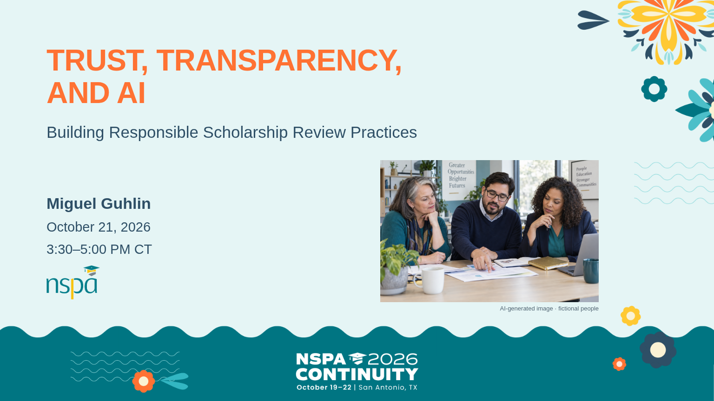
01. Trust, Transparency, and AI
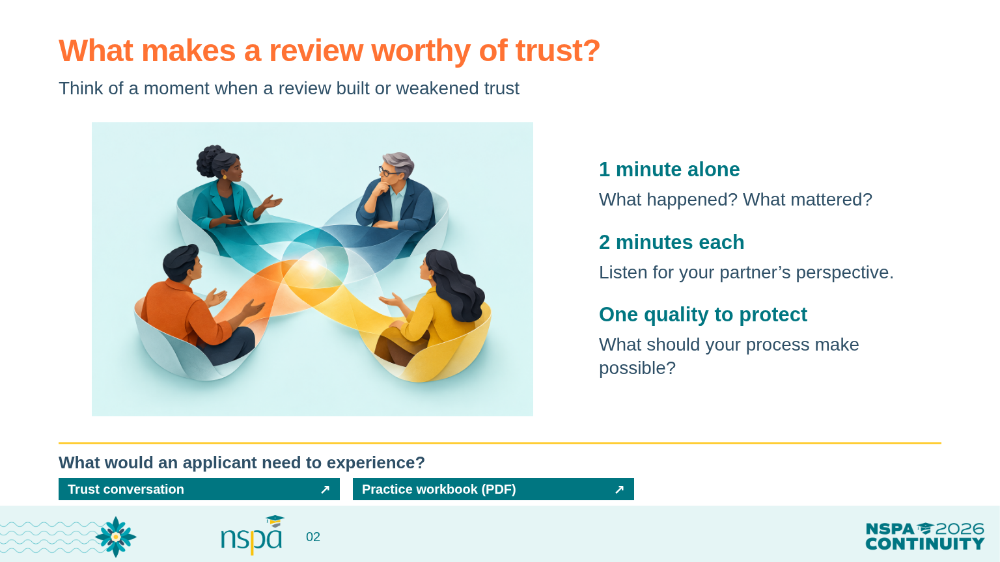
02. What makes a review worthy of trust?
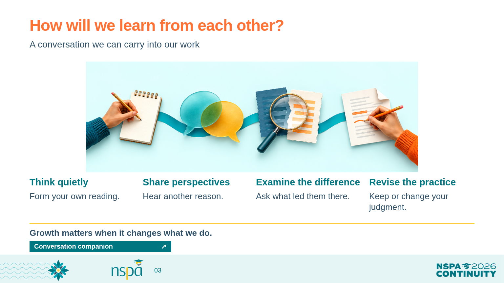
03. How will we learn from each other?
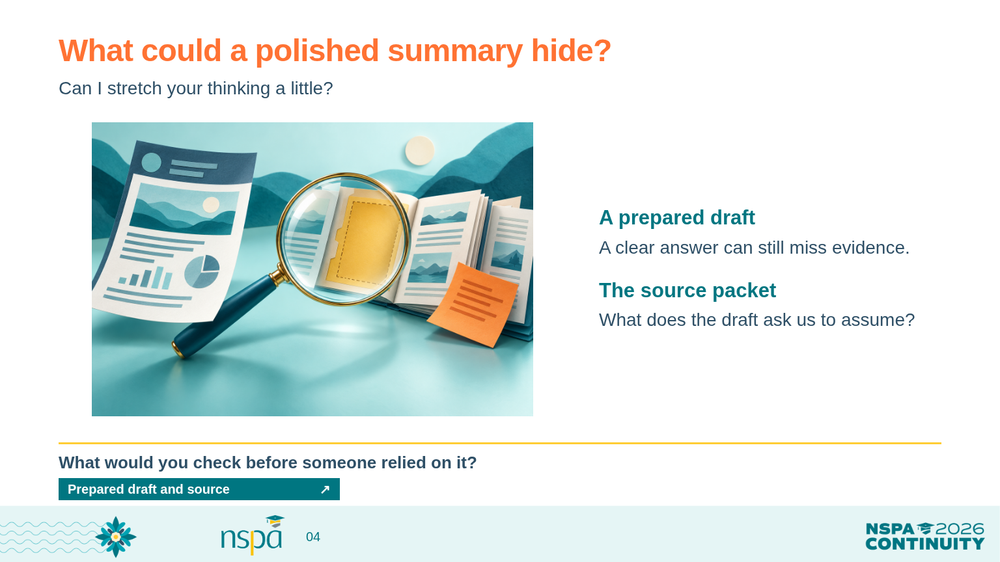
04. What could a polished summary hide?
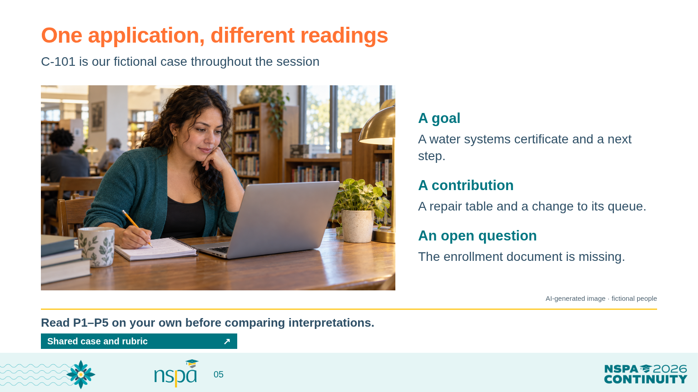
05. One application, different readings
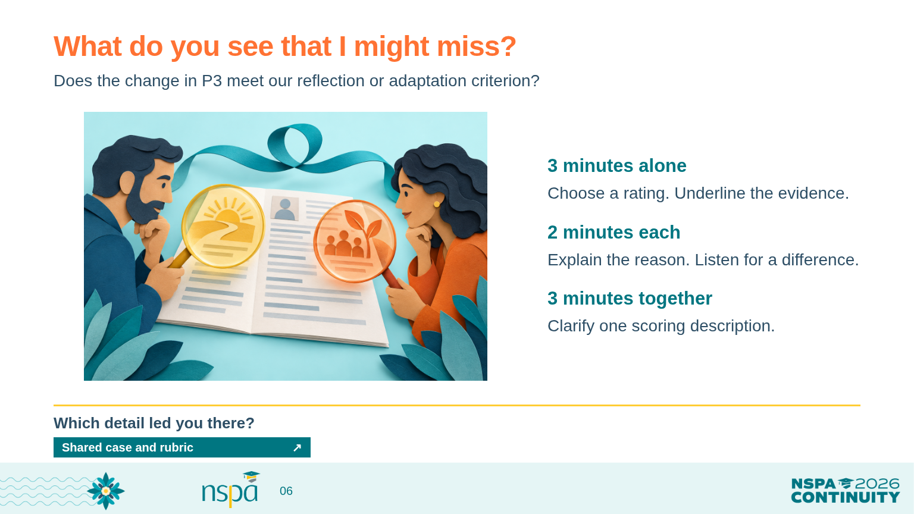
06. What do you see that I might miss?
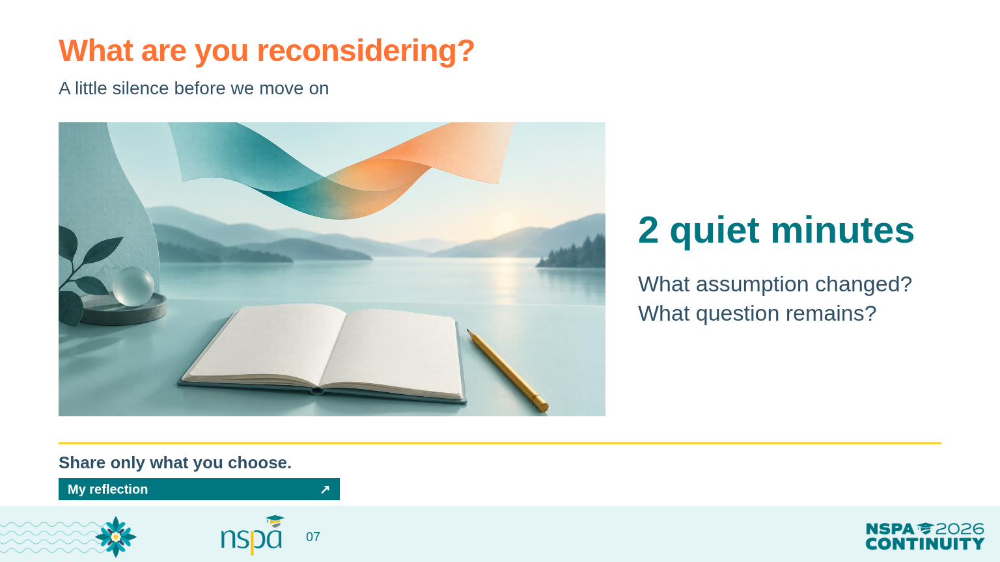
07. What are you reconsidering?
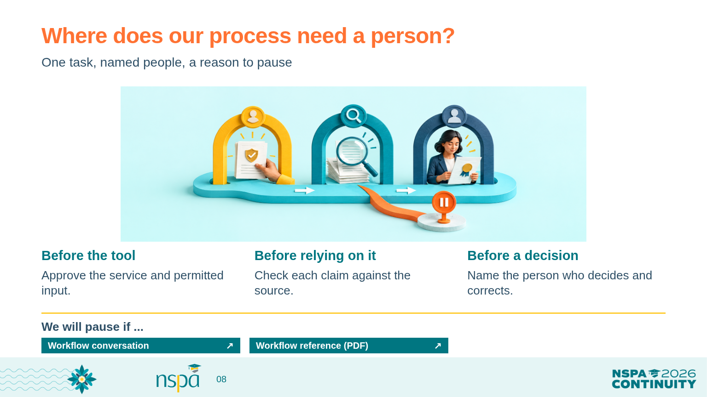
08. Where does our process need a person?
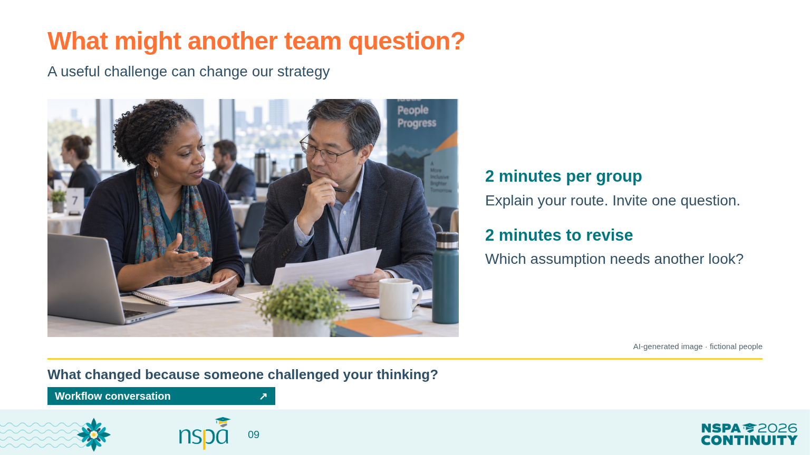
09. What might another team question?
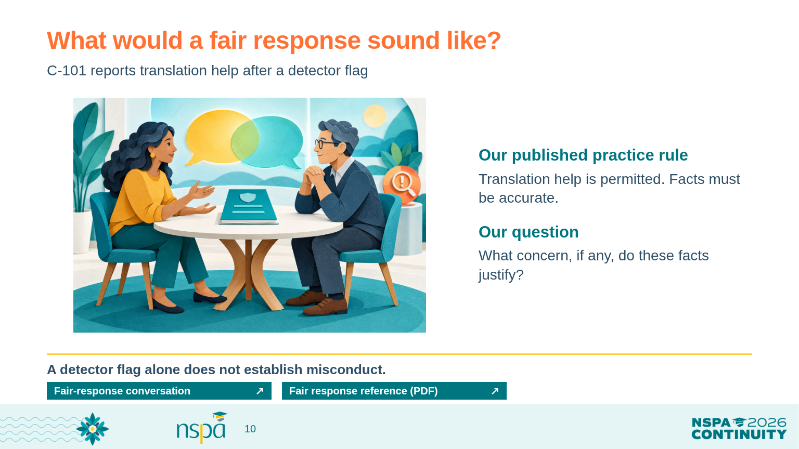
10. What would a fair response sound like?
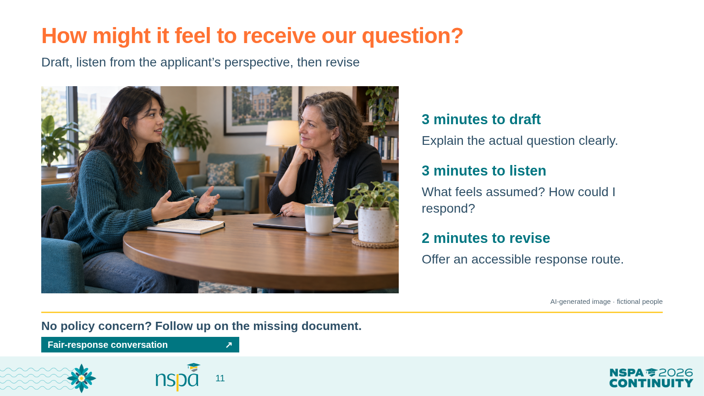
11. How might it feel to receive our question?
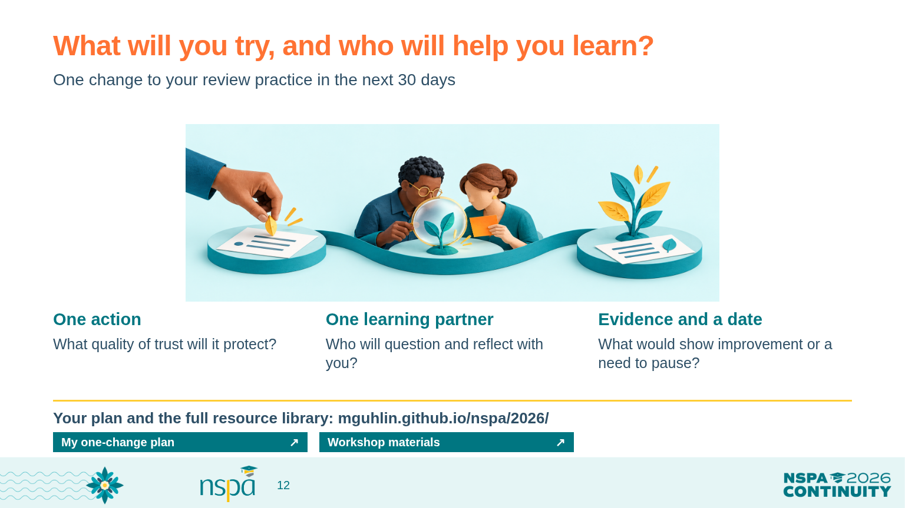
12. What will you try, and who will help you learn?
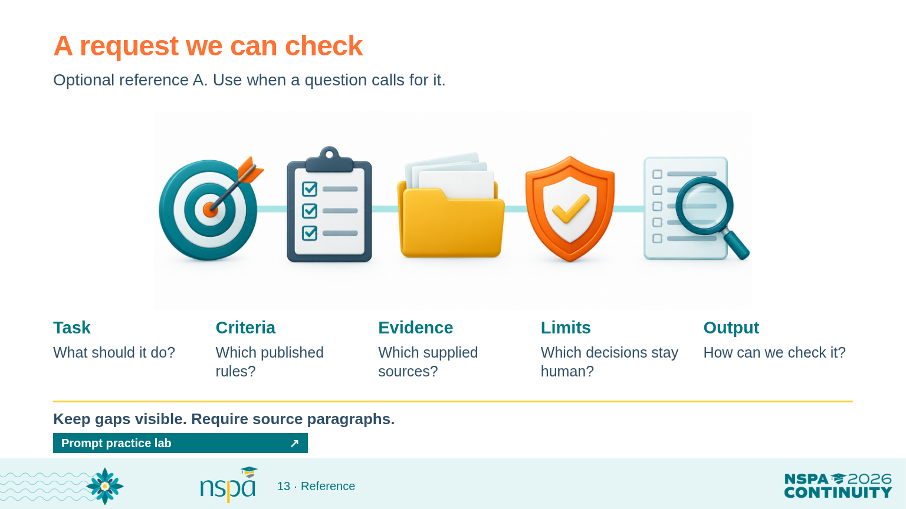
13. A request we can check
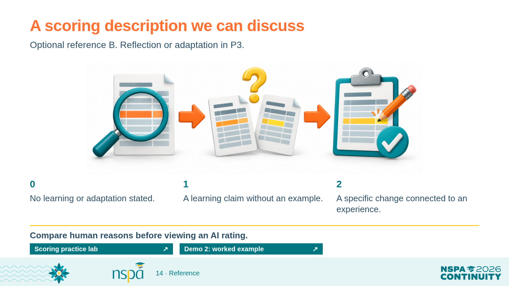
14. A scoring description we can discuss
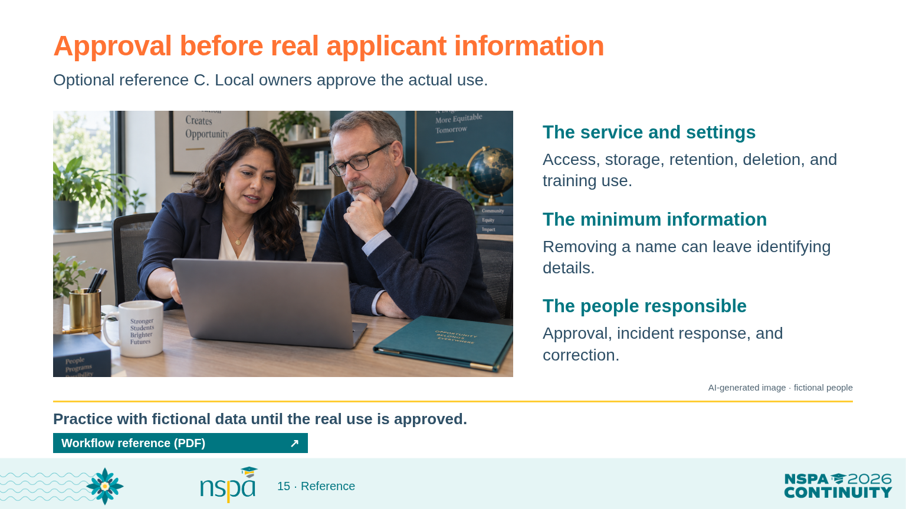
15. Approval before real applicant information
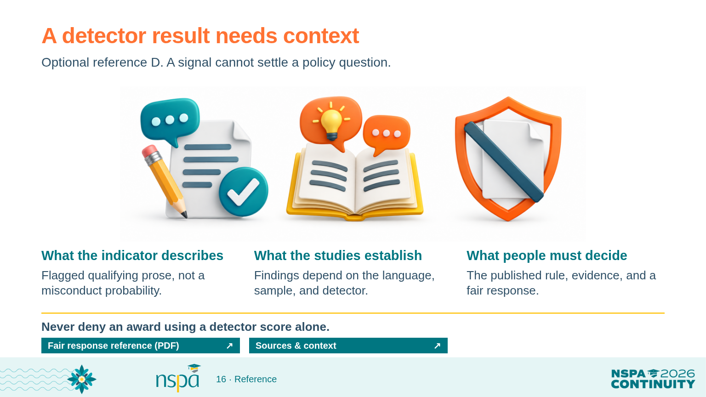
16. A detector result needs context
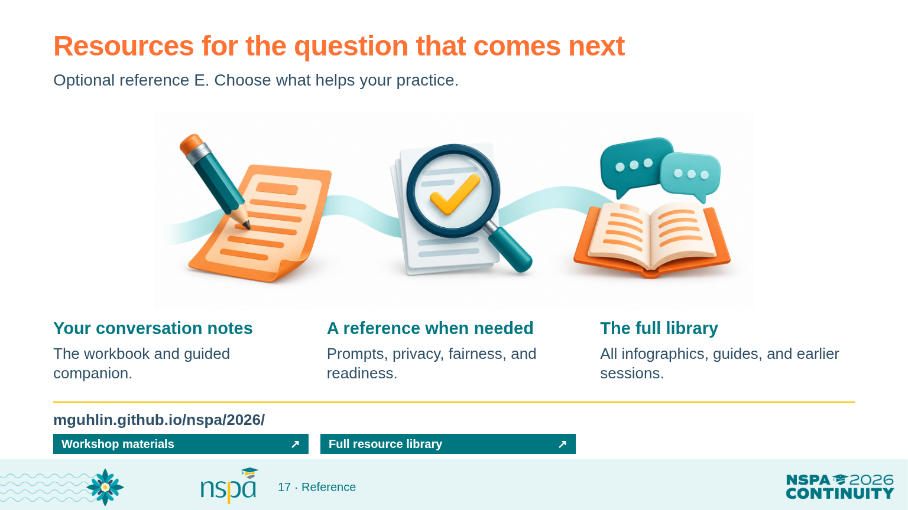
17. Resources for the question that comes next
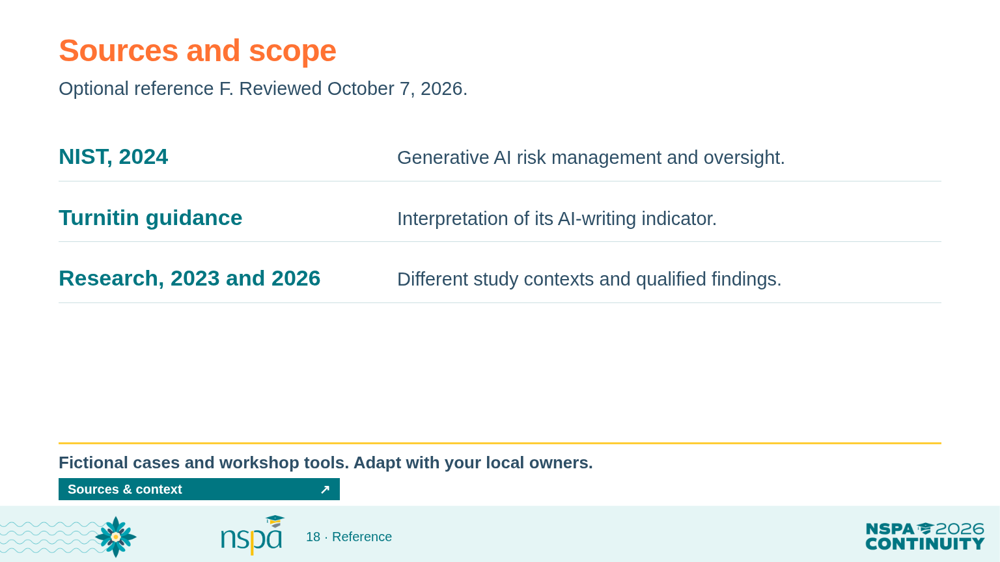
18. Sources and scopeSources, interpretation, and reuse
Reviewed October 7, 2026. Recheck product guidance before the October workshop. The packet, rubric, policy starter, and capacity matrix are workshop teaching tools, not validated selection instruments or official NSPA policy.
- NIST Gen AI Profile (2024)
Gen AI can produce confident falsehoods; evaluate performance in the intended setting, verify sources, and document oversight.
- Turnitin detection FAQ (reviewed October 7, 2026)
The indicator estimates the share of qualifying prose flagged by the model. It is not a probability of misconduct or a determination of misconduct; Turnitin advises against using it alone for adverse action.
- Liang et al., Patterns (2023)
This study found false-positive disparities for the non-native English writing and detectors it tested. It does not establish error rates for all current tools.
- Al Ali, Helcl & Libovicky, EACL SRW (2026)
A later study centered on Czech writing found no systematic non-native-speaker bias across its tested detector families. Context, language, and detector matter.
All examples are fictional. Use an organization-approved workflow before processing any real applicant data. Policy language needs local review. Generated artwork supports the slides; all instructional wording is separately typeset.